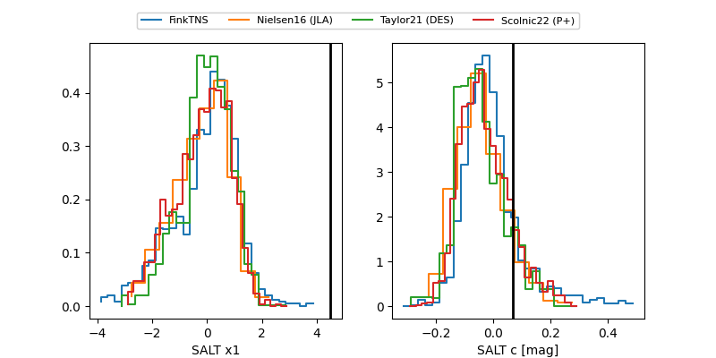

FINK: ZTF25abqzzvs
Lasair: ZTF25abqzzvs
ALeRCE: ZTF25abqzzvs
ZTF25abqzzvs (ztf,fink)
equatorial (ra, dec) = (27.2796,+37.08308)
galactic (l, b) = (135.5297,-24.37363)

last ztfg=20.69
2 ztfg detections